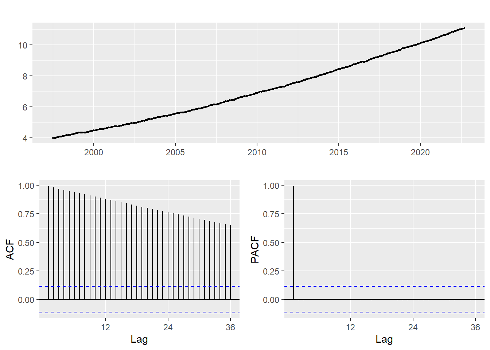
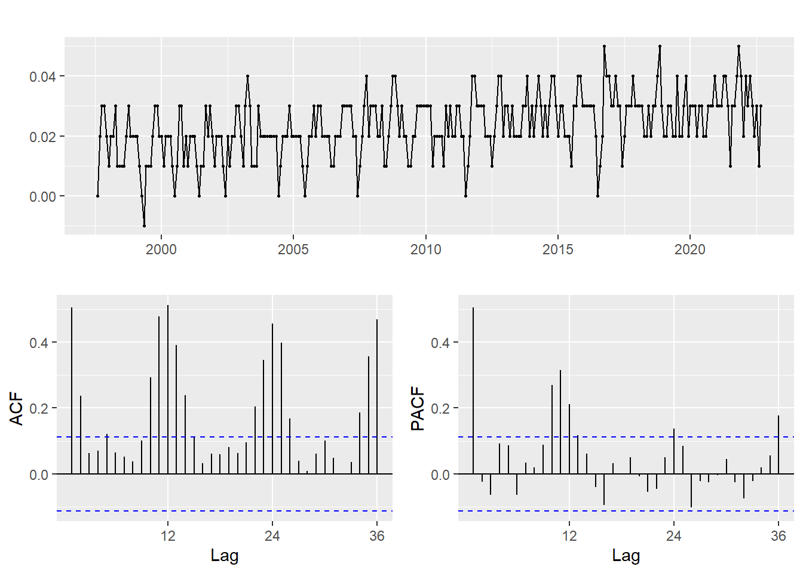
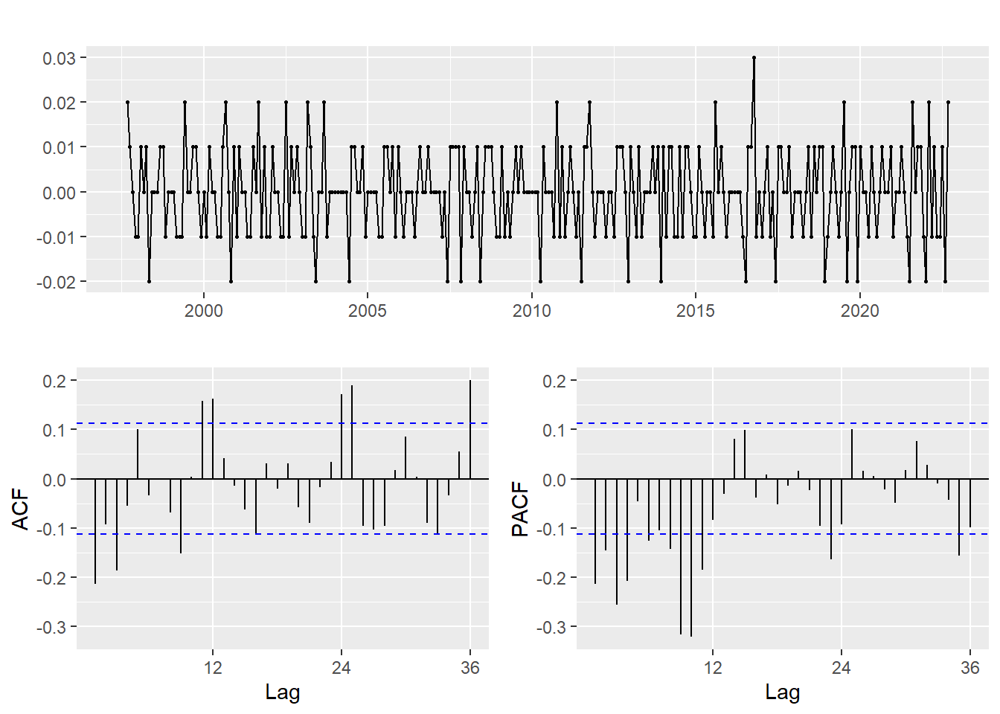
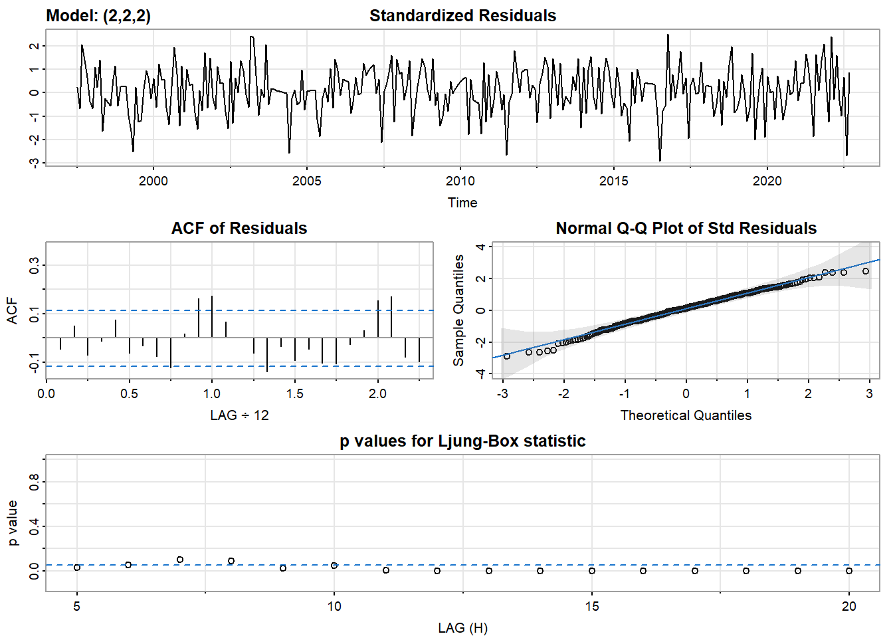
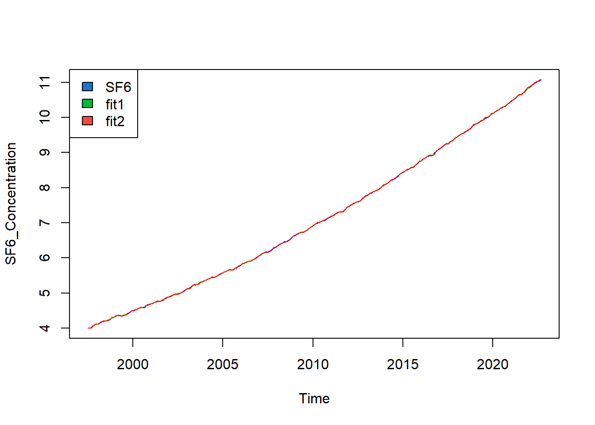
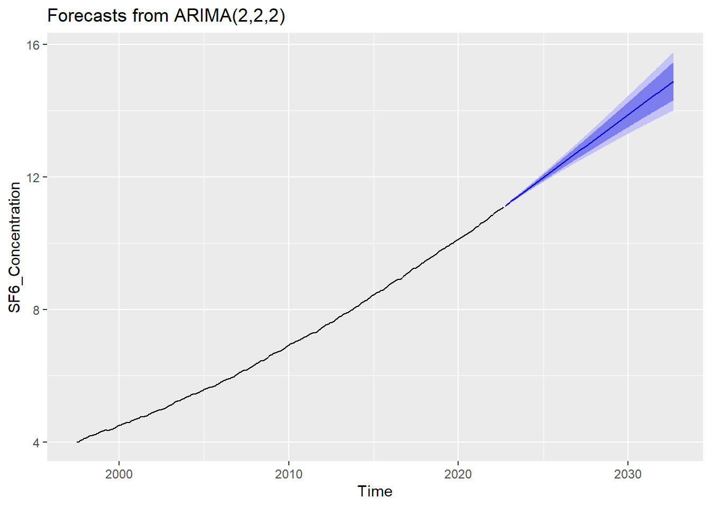
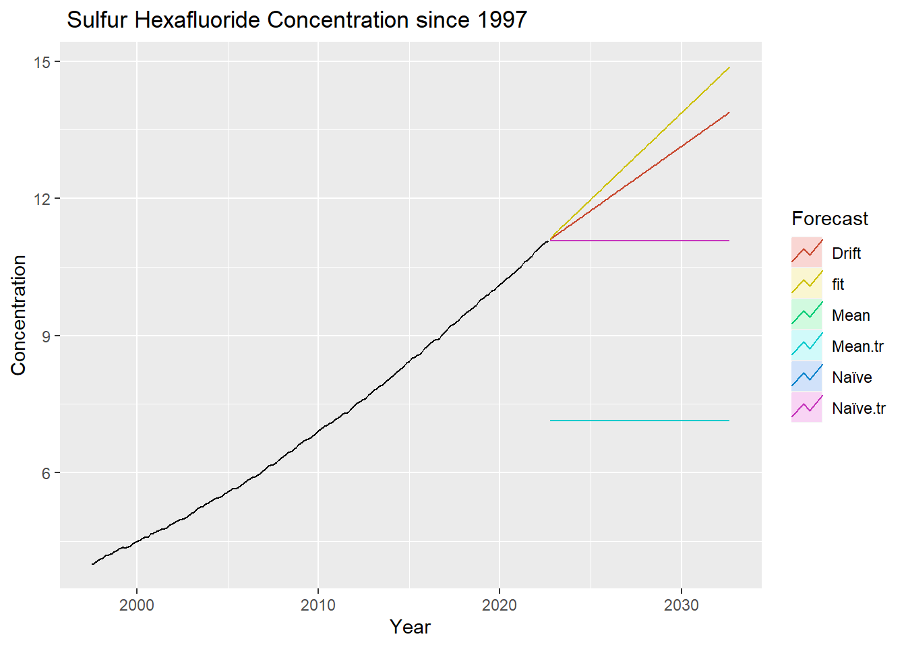

ARMA/ARIMA/SARIMA Models
Modeling Sulfur Hexaflouride Concentration
For this section, we will be using an ARIMA model to forecast future atmospheric concentrations of sulfur hexaflouride.
SF6 Concentration (No differencing)

The above plots show the ACF and PACF for the Sulfur Hexafluoride concentration time series. As expected, the ACF plot shows a very high degree of correlation between values, indicating that this series is not stationary. This follows the previous hypothesis that the series was not stationary due to the strong trend and weak seasonality. Since the series is not stationary, there are several options available to make it so. One of these options is differencing, where the values are recaluclated by subtracting each from the previous, providing the difference between each pair of values. Other methods include smoothing the data with a moving average or using a Box-Cox transformation to bring the data into a more stationary state. Ultimately, the goal of these transformations is to make the data stationary so that it can be better modeled and better predictions can be made.
SF6 Concentration (1st order difference)

These plots demonstrate the first-order differencing of the time series. After eliminating most of the trend component, the seasonality is much more visible in the ACF plot. It is also worth noting that the magnitude of the bars in the differenced graph is much smaller than that of the initial ACF plot. A closer analysis of the ACF plot reveals that the seasonality remains relatively strong even after one differencing.The seasonal spikes appear every 12, 24 and 36 months, which is the expected result for a monthly series. Even though there is still an obvious pattern in the ACF plot, it is necessary to differentiate the series once again to make it stationary.
SF6 Concentration (2nd order difference)

After taking the difference for the second time, the plots are showing much stronger indications that the series is now stationary. Through it is not perfect, the ACF plot has much less correlation across the range of lag parameters. Although there are still some spikes at 12 and 24 months, taking another difference would not be unreasonable. However, it is important to note that if we over difference the data, it will be much more difficult to detect the signal that we are aiming for. This is evident when we look at the 3rd order difference, where the plot is almost indistinguishable from white noise. As a result, it is critical to be mindful of the order of difference when analyzing time series data.
The Augmented Dickey-Fuller Test (ADF) is a powerful tool for testing for stationarity in a time series. To ensure a comprehensive analysis, the ADF test should be run on the undifferenced, 1st order, and 2nd order difference of the time series. By doing so, we can compare the results and gain a clearer understanding of stationarity. The results of the ADF test are displayed below.
Augmented Dickey-Fuller Test
data: SF6_Concentration
Dickey-Fuller = -1.0021, Lag order = 6, p-value = 0.9371
alternative hypothesis: stationary
Augmented Dickey-Fuller Test
data: SF6_Concentration %>% diff()
Dickey-Fuller = -9.9963, Lag order = 6, p-value = 0.01
alternative hypothesis: stationary
Augmented Dickey-Fuller Test
data: SF6_Concentration %>% diff() %>% diff()
Dickey-Fuller = -10.064, Lag order = 6, p-value = 0.01
alternative hypothesis: stationaryThe results of the ADF test indicate that both the 1st and 2nd order differences are stationary, while the undifferenced series is not. This matches my hypothesis, with the exception of the first order difference. Inspection of this ACF plot reveals a clear pattern of correlation at 12 and 24 months. I find it quite puzzling that the ADF test believes that this series is stationary despite the spikes in the ACF plot.
Parameter Selection
Based on the PACF and ACF plots, I will be modeling the twice-differenced \(SF_6\) concentration because I want to ensure that our series is stationary. Based on the ACF and PACF plots of the twice differenced \(SF_6\) concentration shown above, I will select 1 and 3 as possible choices for \(p\) and 1,2,3, and 4 as possible choices for \(q\). Since this data is twice differenced, I will be using a \(q\) value of 2.
After running the model, we get the following table of AIC and BIC values based on the model parameters.
| p | d | q | AIC | BIC | AICc |
|---|---|---|---|---|---|
| 0 | 2 | 0 | -1926.281 | -1922.574 | -1926.268 |
| 0 | 2 | 1 | -1972.627 | -1965.213 | -1972.587 |
| 0 | 2 | 2 | -2017.168 | -2006.047 | -2017.087 |
| 0 | 2 | 3 | -2024.154 | -2009.325 | -2024.019 |
| 2 | 2 | 0 | -1943.242 | -1932.120 | -1943.161 |
| 2 | 2 | 1 | -2021.723 | -2006.894 | -2021.588 |
| 2 | 2 | 2 | -2042.100 | -2023.564 | -2041.896 |
| 2 | 2 | 3 | -2026.081 | -2003.839 | -2025.796 |
Based on the table, the model with the lowest AIC and BIC scores is the 2,2,2 model. None of the other models are that close to this one in terms of AIC and BIC scores. For the sake of comparison, I will select the worst model of the bunch (0,2,0) to show that even this is very similar to our best model. All of the option here would be adequate for forecasting this series.
Model Diagnostics
For a (2,2,2) ARIMA model, the equation is:
\[y(t) = c + ϕ(1)*y(t-1) + ϕ(2)*y(t-2) - θ(1)*ε(t-1) - θ(2)*ε(t-2) + ε(t)\]
where:
- \(y(t)\) is the value of the time series at time t
- \(c\) is a constant term (i.e., the mean of the series)
- \(ϕ(1)\) and \(ϕ(2)\) are the autoregressive coefficients for lags 1 and 2, respectively
- \(θ(1)\) and \(θ(2)\) are the moving average coefficients for lags 1 and 2, respectively
- \(ε(t)\) is white noise (i.e., a random error term) with mean zero and constant variance
Now, lets consider the model diagnostics using standardized residuals.

For the most part, the residuals plots looks as we would expect. The residuals have a constant mean and variance, and the lagged p-values for the Ljung-Box statistic are under the 0.05 threshold for all except two of the lags. Something that does still appear is a spike in ACF residuals at lags 12 and 24. This would suggest that the series may not have been adequately stationary prior ro modeling. However, we mentioned this earlier, and it wsa determined that twice-differenced was the proper metric to use, as three-times differences would over difference the data and lose valuable insights.
Next, we can plot the raw data, our chosen model (2,2,2), and the second model (0,2,0) on the same plot to see how they compare on the training data. As expected, both models are nearly identical to the SF6 data. The lines are directly on top of each other and it is impossible to make out any difference between the models and the data.

Auto-arima
Next, we can compare our ARIMA(2,2,2) model to the auto-arima model. Thankfully, the auto-arima function provides the same model as the one we came to through traditional means. This is validating because there were many choices for p,d, and q, so it is nice to know that the best model was selected in both methods.
Series: SF6_Concentration
ARIMA(2,2,2)
Coefficients:
ar1 ar2 ma1 ma2
1.2422 -0.5007 -1.8154 0.8326
s.e. 0.0653 0.0550 0.0495 0.0499
sigma^2 = 6.44e-05: log likelihood = 1026.05
AIC=-2042.1 AICc=-2041.9 BIC=-2023.5610-year Forecast
Finally, we can use the ARIMA model to forecast the SF6 concentration over the next 10 years (120 months). The plot below shows the forecast of the ARIMA(2,2,2) model.

Benchmark Methods
In order to determine the effectiveness of our model, we need to compare to other benchmark methods. Based on the graphs and accuracy tests below, it is clear that the ARIMA(2,2,2) model far outperforms any of the benchmark methods. Thus, we can be confident when using this model going forward.

pred1=forecast(fit1, h=120);
accuracy(pred1) ME RMSE MAE MPE MAPE
Training set 0.0007896781 0.00794485 0.006303769 0.0115696 0.09585017
MASE ACF1
Training set 0.02238707 -0.04714439f1 <- meanf(SF6_Concentration, h=120)
accuracy(f1) ME RMSE MAE MPE MAPE MASE ACF1
Training set 1.282536e-16 2.071243 1.79491 -9.131477 27.7452 6.374407 0.990158f2 <- naive(SF6_Concentration, h=120)
accuracy(f2) ME RMSE MAE MPE MAPE MASE
Training set 0.02344371 0.02547561 0.02350993 0.3366936 0.338216 0.08349269
ACF1
Training set 0.5054292f3 <- rwf(SF6_Concentration, h=120)
accuracy(f3) ME RMSE MAE MPE MAPE MASE
Training set 0.02344371 0.02547561 0.02350993 0.3366936 0.338216 0.08349269
ACF1
Training set 0.5054292